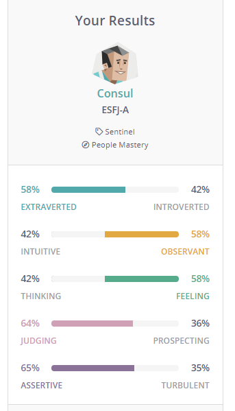
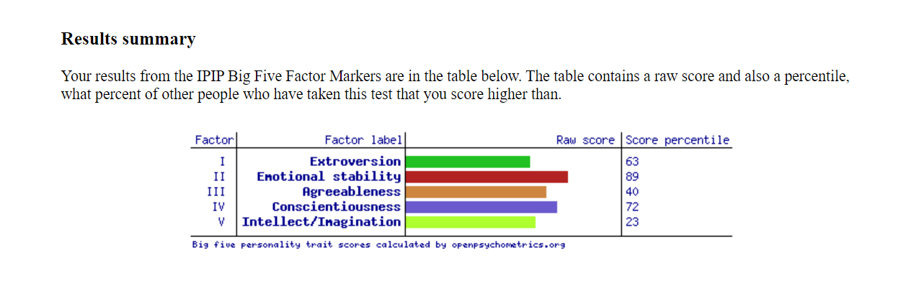

Geoffrey Boyle Assignment 1
Geoffrey Mark Boyle
Student Number: s3871416
Email: s3871416@student.rmit.edu.au
About Me
I'm a 43year old Australian that speaks English and a little bit of Indonesian.
I am married and have a 3 month old child.
My interests and hobbies are travelling, watching movies, rugby league, fishing and working with computers.
I completed year 12 back in 1995, followed by studying PC Support and Web Development.
My Interest in IT
I am currently undecided at the moment which career pathway I will choose in IT.
My interest in IT started back at high school, I enjoyed the subject from day one.
Some of the tasks involved were using MSDOS, SQL, Windows and understanding the basics of computer fundamentals.
My IT Experiences
At home, I would disassemble computers to understand all of the components and how they work.
Experiment with operating systems and creating batch files though MSDOS.
I learnt from studying web development to use software such as Dream weaver, Flash, Fireworks, html and Javascript.
That was approximately 20 years ago. Since then, my memory has become faint and some of the software would be out of date.
My choice to come to RMIT
I had contacted a lot of university campuses for information about studying a Bachelor of Information Technology.
From my research, I had discovered not all campuses offer 100% online study.
The degree structure and subjects on offer with RMIT cover a broad range of areas in IT that are of interest.
I expect to learn real life skills from industry experts that cover a variety of areas in IT.
Another expectation of learning is to work in teams effectively, efficiently and professionally.
Ideal Job
Experienced IT Engineer for MSP (Managed Service Provider)
Data Merge requires an experienced IT Engineer to make improvements and maintain clients IT and communication needs.
The role also requires the successful applicant to report to the IT director, working as a group on clients infrastructure
onsite and remotely
The following listed below are skills, qualifications and experiences required for the position.
- Must have previous experience working with MSP.
- Office 365 and Microsoft Cloud based systems.
- Networking
- Windows Systems
- Virtualisation
- IT Telephony
- Cyber Security
The skills, qualifications and experience for this role I do not currently have.
My plan is to study and achieve my Bachelor of IT and develop my skills in a variety of areas.
I would Look for an entry level job at the start and work my way up the line.
Continuing on further to study the Master of IT while working in the field would also be an option.
The job advertisement appeals to me in a number of ways.
- There are various areas of IT skills required for the role.
- You can work onsite or remotely.
Personal Profile
Result From https://www.16personalities.com

Result From http://www.emtrain.eu/learning-styles/

Result From https://openpsychometrics.org/tests/IPIP-BFFM/results.php?r=3.3,4,3.6,3.8,3.4

The results in the test show some of the characteristics about myself. I believe this can be helpful when it
comes to looking for some characteristics of the other people in the group.
As a team member, it can be useful when having to deal with issues and resolving conflict within the group.
From the employer’s perspective, they might be looking for specific people with a particular mindset to achieve acertain result.
When it comes to how the results may influence behaviour in a team, somebody that is highly motivated may find it
difficult to work with somebody else that does not have much motivation. There might be other specific characteristics
that can make some people more difficult to work with than others.
When forming a team, you need to take in account the type of people that have specific characteristics that you
can work with, rather than people that you might find difficult and may have conflict with.
Go To My Project Idea
Back To The Top